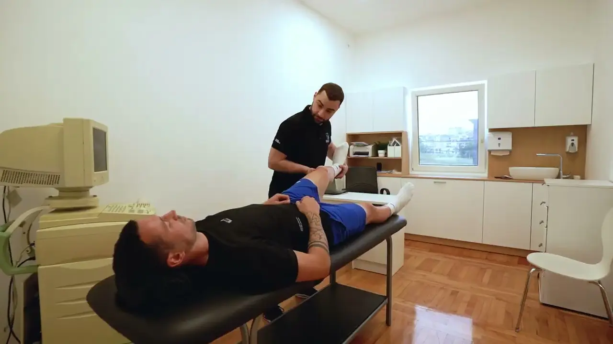

INDIBA
Radiofrekventna terapija na 448 kHz. Zagreva tkivo iznutra, pojačava cirkulaciju i podstiče regeneraciju. Koristi se i u akutnoj fazi, kada pokret još nije moguć.
USLUGA 02 · CILJANA PODRŠKA OPORAVKU
Savremene procedure koje smiruju bol i ubrzavaju regeneraciju tkiva. Da pokret ponovo bude moguć.

■ ŠTA JE OVO
Kad bol traje danima i ometa san, posao ili trening, prvi cilj nije da se sve reši odjednom — nego da se bol spusti dovoljno da telo ponovo sme da se kreće. Fizikalna terapija radi upravo to.
Ne tretiramo osećaj, nego tkivo: upalu, otok, zategnutost, pritisak na nerv. Aparat i procedura se biraju prema nalazu i fazi oporavka, zato jedna te ista tegoba kod dva čoveka ne dobija isti tretman.
Fizikalna terapija je početak, ne ceo put. Čim bol popusti, prelazi se na pokret — jer ono što je smireno mora i da izdrži.
Bol je stalan i ometa vas u snu, na poslu ili na treningu.

Ne uključujemo aparat dok ne znamo šta tretiramo. Ako dijagnostika još nije urađena, kreće se od nje: pregled, testiranje i jasan nalaz.
INDIBA, dekompresija, NeuFit, elektroterapija, magnet, krioterapija, bira se prema tkivu i fazi oporavka, ne po navici i ne po tome šta je slobodno.
Jedan dolazak nosi više procedura u nizu, u redosledu koji ima smisla: prvo priprema tkiva, pa ciljani tretman, pa smirivanje. Traje oko sat vremena.
Kad bol popusti, terapija bez vežbe gubi smisao. Tada se dodaju vežbe pod nadzorom, a terapija postepeno prelazi u kineziterapiju.
Radiofrekventna terapija na 448 kHz. Zagreva tkivo iznutra, pojačava cirkulaciju i podstiče regeneraciju. Koristi se i u akutnoj fazi, kada pokret još nije moguć.
Kontrolisano istezanje kičme koje rasterećuje disk i koren nerva. Za diskus herniju, ishijas i bol koji seva niz nogu.
Stimulacija direktnom strujom koja otkriva mesta gde je mišić „isključen" posle povrede ili operacije i vraća ga u rad.
TENS, interferentne i dijadinamičke struje, za smanjenje bola i opuštanje prenapregnutog mišića, najčešće kao priprema za manualni rad.
Podrška zarastanju kod degenerativnih promena na zglobovima i kod sporog oporavka kosti i mekog tkiva.
Kontrolisano hlađenje uz kompresiju. Skida otok i akutni bol posle povrede ili operacije, kada je svako zagrevanje pogrešan potez.
Nežna tehnika koja pokreće višak tečnosti iz tkiva. Za otok posle operacije, gipsa ili duge nepokretnosti.
Procedura je naš posao. Vaš je da opišete tegobu u jednoj rečenici — ostalo određuje nalaz.

Prvi pomak se obično oseti posle 3–4 dolaska, a plan se posle toga koriguje prema onome što telo pokaže. ZA POTVRDU
Cene su prepisane sa aktuelnog sajta lokomoto.rs i traže potvrdu. Nedostaje odgovor na RFZO i način plaćanja. ZA POTVRDU
Ne. Većina procedura se oseća kao prijatna toplota, blago pulsiranje ili hladnoća. Ako nešto pojačava bol, terapeut menja parametre ili proceduru odmah — ne „izdržava se".
Zavisi od nalaza i od toga koliko tegoba traje. Sveža povreda traži manje dolazaka od bola koji stoji mesecima. Posle 3–4 dolaska se vidi da li plan radi, i tada se koriguje, ne posle deset.
Ne preporučujemo. Bez nalaza se tretira mesto gde boli, a ne uzrok — i bol se vraća čim terapija stane. Ako imate skorašnji nalaz drugog lekara, donesite ga i pregled je kraći.
Odgovor čeka potvrdu klijenta: da, ne ili delimično. ZA POTVRDU